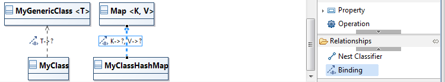

Implement the application specification
When John has finished the specification of the application, he gives it to Bob. From the existing application UML definition, Bob defines the application at a lower level.
At this point, Bob breaks the components out into classes and objects.
Define the implementation structure
The class diagram is used to describe the structure of the system by showing the classes, the interfaces, their attributes, their operations and their relationships.

The class diagram is an unsynchronized diagram which means that the user has to add existing elements manually on the diagram to see them.
Manage elements
Create element
It is possible to create an element by selecting the type creation tool from the palette and then clicking on the diagram or an element.

A diagram is associated to a package and when the user clicks on the diagram background the element is created under the corresponding package in the UML model.
If the user selects a container, the element will be created under the corresponding semantic element in the UML model.
Tooltip tools are also available to create any kind of elements. So, you have the ability to create elements in a contextual way related to the currently selected elements.
If your pointer is on the diagram background, after a few seconds you should see the following assistant :

If your pointer is on a class the assistant will be :

Creation tools are available in the class diagram for the following types :
| Element | Representation | Comments |
|---|---|---|
| Class |  |
Representation of objects |
| Enumeration |  |
A data type set of values |
| Interface |  |
Contract that implementers agree to meet |
| Datatype |  |
All copies of an instance of a data type are considered as same instance |
| Primitive type |  |
Default data type |
| Package |  |
Organize the model content |
Generic Class
To define a Generic Class, use the direct edit tool:

To define a Binding, use the create edge tool called “Binding” from a Class to a Generic Class.
You may notice that “?” refers to an undefined actual type:

To specify the binding association from the formal to the actual type use also the direct edit tool:

Delete element
The user can also delete an element (see Diagram editor/Editor tab-bar/Delete element/from model).
Importing primitive types
The contextual menu Import primitive types can import predefined types libraries from a right-click on the background of a class diagram. This menu allows to import primitives for :
- UML
- Java
- XML
- Ecore
Then, the imported types can be used in the property’s definition.
Another way to import primitive types is just by editing a property on a class (by typing directly on the selected property or by hitting F2) and type the wanted datatype. If it’s a known type, as String for example, the corresponding library is automatically imported : this library is visible in the model explorer when the project dependencies entry is expanded.
The case is not taken into account, so it is possible to type “string” and the “String” datatype of UML Primitive types library will be used.
Manage features
It is possible to create a feature by selecting the feature creation tool from the palette and then clicking on the diagram or an element.
If the user selects a container, the feature will be created under the corresponding semantic element in the UML model.
Tooltip tools are also available to create any kind of features.
Creation tools are available in the class diagram for the following features :
- property : Can be created under classes, interfaces, datatypes, primitive types, enumerations.
- typed property : Can be created under classes, interfaces, datatypes, primitive types, enumerations. When the user selects a container, a wizard is open which list all the available types existing in thee modeling project in order that the user selects a type for the property to create.
- operation : Can be created under classes, interfaces, datatypes, primitive types, enumerations.
- literal:Can be created under enumerations.
It is possible to add and edit :
- the property type :
- thanks to direct edit by specifying the type as : myProperty:PropertyType. We added a few accelerators so that you can quickly edit properties in a class just by typing the label. Typing :
aNewNamewill update the attribute name.aNewName : SomeTypewill update the attribute name and will look for the datatype with the given name. If found it will/someNamewill set the Attribute as derived.=someValuewill set the default value of the Attribute.[0..1]will set the multiplicity of the attribute to 0 for the lower bound and 1 for the upper bound.[0..*]will set the multiplicity of the attribute to 0 for the lower bound and unbounded for the upper bound.
- from the General tab of the properties view
- thanks to direct edit by specifying the type as : myProperty:PropertyType. We added a few accelerators so that you can quickly edit properties in a class just by typing the label. Typing :
- the parameters of an operation :
- thanks to direct edit by specifying the parameter as : myOperation(param1:Param1Type, param2:Param2Type)
- from Parameters tab of the properties view
The user can also delete a feature (see Diagram editor/Editor tab-bar/Delete element/from model).
Manage relationships
Create relationships
It is possible to create a relationship by selecting the edge creation tool from the palette and then clicking on a source element and a target element.
The following edge creation tools exist in the palette :
- association : is represented by a solid link with start and end labels and can be created between two classes. According to the association navigability an arrow will be visible at the start or end of the link.
- reference : is represented by a solid link with start and end labels and can be created between two classes. According to the reference navigability an arrow will be visible at the start or end of the link.
- composition : is represented by a solid edge with fill diamond decorator and with start and end labels, it can be created between two classes. According to the composition navigability an arrow will be visible at the start or end of the link.
- aggregation : is represented by a solid edge with diamond decorator and with start and end labels, it can be created between two classes. According to the aggregation navigability an arrow will be visible at the start or end of the link.
- association class : is represented by a dashed edge with start and end labels and a class linked to the dashed edge, it can be created between two classes.
- generalization : is represented by a solid edge without label, it can be created between two classifiers (class, interface, datatype, enumeration…).
- interface realization : is represented by a dashed edge without label, it can be created between a class and an interface.
- dependency : is represented by a dashed edge without label, it can be created between any classifiers.
- usage : is represented by a dashed edge with use as label, it can be created between any classifiers.
- nest classifier : is represented by a solid edge with an output fill closed arrow at start, it can be created between any classifiers.
Reconnect relationships
And finally, he can reconnect relationships. It is possible to reconnect the source and the target of any kind of edge in the activity diagram :
- association
- composition
- aggregation
- association class
- generalization
- interface realization
- dependency
- usage
- nest classifier
Support for Broken Associations
It might happen that for some reason you have an Association instance in your package which doesn’t have the proper ends. In that case
the class diagram will show the broken associations as nodes :
!../images/features/class_pics/broken associations Class Diagram.jpg!
You can use the Association tools in the palette (Association, Reference, Composition and Aggregation) to re-attach the Association to a classifier.
Manage existing elements
As the diagram is unsynchronized, the user needs to add manually the elements already existing in the semantic model that should appear on the representation.
It is possible to add existing elements by :
- selecting the add tool from the palette or the tooltip and then clicking on the diagram or an element. The add tool opens a selection wizard.
- drag and droping an element from the model explorer.
The following elements can be added on a class diagram :
- class
- package
- interface
- data type
- primitive type
- enumeration
- component
The user can see that an element is not coming from the current package :
- the element border is lighter than the element border of elements defined in the current package
- a tooltip shows the container package of the element if the element is not contained by the current package
And finally, he can remove an existing element from a diagram. In this case the element is only deleted from the representation but it is not removed from the UML model. This Remove tool exists in the Existing elements section in the palette (
see Diagram editor/Editor tab-bar/Delete element/from model).
Add related elements
In the class diagram a contextual action is available to show on the diagram the element related to the selection.
The add related elements action is available from :
- a class, an interface, a package, an enumeration, a datatype, a primitive type : shows all the elements that define a relationship (dependency, association, composition…) with the selected element
- a class diagram : shows all the elements contained in the package associated to the diagram.
Edit labels
In the class diagram, it is possible to edit the elements labels (
see Diagram editor/Editor main graphical area/Direct edit). This actions allows to edit :
- class, interface, package, enumeration, datatype, primitive type labels
- relationships labels
Using UML in colors
UML in colors is an object modeling technique proposed by Peter Coad, Eric Lefebvre, and Jeff De Luca in a series of articles in 1999.

An Archetypes layer is available in the UML Designer class diagram.

When the layer is selected, new tools are available in the palette :

The modeling in color patterns and strategies are built around the idea of class archetypes.

It exists four different kind of archetypes :
- moment-interval and mi-detail (pink): represents a moment or interval of time, all things that happen in the software.
- role (yellow): represents something/someone who participates to moment-intervals.
- description (blue): represents a collection of values a kind of catalog.
- party, place, or thing (green): represents someone or something that plays a role.
The Domain Neutral Component (DNC) is the common pattern applied with the UML in colors technique.

To create an archetype in a class diagram just select an archetype from the palette of the tooltip.
The archetypes are stored in UML model as stereotyped classes.
To change an existing class to an archetype just selects the tool from the palette and the existing class. The stereotype of the selected archetype is applied on the class which is colored.
UML in colors examples are available from Eclipse menu File > New > Example… > UML > Uml in colors.
For more detailed explanation on UML in colors have a look to Peter Coad’s website.
Instanciate the application
This diagram is not yet implemented.
The object diagram is used to describe the structure of the system by showing the objects at a specific time.

The object diagram is an unsynchronized diagram which means that the user has to add existing elements manually on the diagram to see them.
Manage instances
It is possible to create and delete instances in the object diagram.

Create an instance
It is possible to create an instance by selecting the creation tool from the palette and then clicking on the diagram or an element. A diagram is associated to a package and when the user click on the diagram background the element is created under the corresponding package in the UML model.
If the user selects a container, the element will be created under the corresponding semantic element in the UML model.
Tooltip tools are also available to create instances.
Set default value
It is possible to set a default value to an instance property by selecting the tool from the palette and then clicking on an instance. This tool opens a wizard to ask the user to select a property of the selected instance type.
Manage existing elements
As the diagram is unsynchronized, the user needs to add manually the elements already existing in the semantic model that should appear on the representation.
It is possible to add existing elements by :
- selecting the add tool from the palette or the tooltip and then clicking on the diagram or an element. The add tool opens a selection wizard.
- drag and droping an element from the model explorer.
Only instances can be added on an object diagram.
The user can see that an element is not coming from the current package :
- the element border is lighter than the element border of elements defined in the current package
- a tooltip shows the container package of the element if the element is not contained by the current package
The user can also delete an instance (see Diagram editor/Editor tab-bar/Delete element/from model).
Add related elements
In the class diagram a contextual action is available to show on the diagram the element related to the selection.
The Add related elements action is available from :
- an instance : shows all the elements that define a relationship (dependency, association, composition…) with the selected element
- an object diagram : shows all the elements contained in the package associated to the diagram.
Edit labels
In the class diagram, it is possible to edit the elements labels (see Diagram editor/Editor main graphical area/Direct edit). This actions allows to edit :
- class, interface, package, enumeration, datatype, primitive type labels
- relationships labels
Define the application behavior
Bob describes the application behavior thanks to Statemachine diagrams and Sequence diagrams.
Statemachines
The statemachine diagram is used to represent the different states and transitions of a system.

The statemachine diagram is a synchronized diagram which means that any elements existing under a statemachine in the UML model will be visible automatically in the statemachine diagram.
Manage statemachines
It is possible to create statemachine elements by selecting the creation tools from the palette and then clicking on the diagram or an element. A diagram is associated to a package and when the user click on the diagram background the element is created under the corresponding package in the UML model.
If the user selects a container, the element will be created under the corresponding semantic element in the UML model.

Tooltip tools are also available to create any kind of elements.
Creation tools are available in the statemachine diagram for the following types :
- Region = Group logical states;
- State = Describes the elements condition at a specific moment;
- Initial = The start of a flow;
- Final = Indicates the completion of a flow;
- Fork = Split the flow into a number of concurrent flows;
- Join = Join the flow from a number of concurrent flows to one flow;
- Choice = Compose complex flows according to a runtime condition;
- Junction = Merge multiple flows;
- Terminate = Indicates execution end;
- Shallow history = Represents the most recent active substate of its containing state;
- Deep history =Represents the most recent active configuration of the composite state that directly contains this pseudostate;
- Entry point = Defines the beginning of a State Machine;
- Exit point = State machine exit.
The user can also delete a statemachine element (see Diagram editor/Editor tab-bar/Delete element/from model).
Manage transitions
It is possible to :
- create a transition : by selecting the edge creation tool from the palette and then clicking on a source element and a target element.
- delete a transition : by selecting the edge in the diagram or in the Model explorer view and then selecting the delete tool. This tool deletes the semantic element. If a representation is open, the view corresponding to the deleted flow is not anymore visible after the delete action (see Diagram editor/Editor tab-bar/Delete element/from model).
- reconnect transitions : to reconnect the source and the target of a transition in the statemachine diagram.
Edit labels
In the statemachine diagram, it is possible to edit the elements labels (see Diagram editor/Editor main graphical area/Direct edit). This actions allows to edit any statemachine elements labels.
Sequences
The sequence diagram is used to show how processes operate with one another and in what order.

The sequence diagram is a synchronized diagram which means that any elements existing under an interaction in the UML model will be visible automatically in the sequence diagram.
Manage interaction elements
It is possible to create:
- lifeline : is an individual participant in an interaction
- associated to a class
- associated to an actor
- destruction
- creation
- message : indicates a flow of information between elements
- synchronous
- asynchronous
- lost
- found
- execution
- state invariant : condition applied to a lifeline
- interaction use : call another interaction
- combined fragments : defines an expression of interaction fragments
- alternatives
- option
- iteration
- break
- parallel
- strict sequencing
- critical region
- ignore
- consider
- assertion
- negative
The user can also delete an element (see Diagram editor/Editor tab-bar/Delete element/from model).
Reorder an interaction element
It is possible to reorder the interaction elements :
- lifeline can be reorder horizontally
- other elements (execution, messages…) can be reordered vertically
This tool updates the semantic element positioned in the interaction fragments list. If a representation is open, the view corresponding to the moved element is automatically updated.
Edit labels
In the sequence diagram, it is possible to edit the elements labels (see Diagram editor/Editor main graphical area/Direct edit). This actions allows to edit any interaction elements labels.